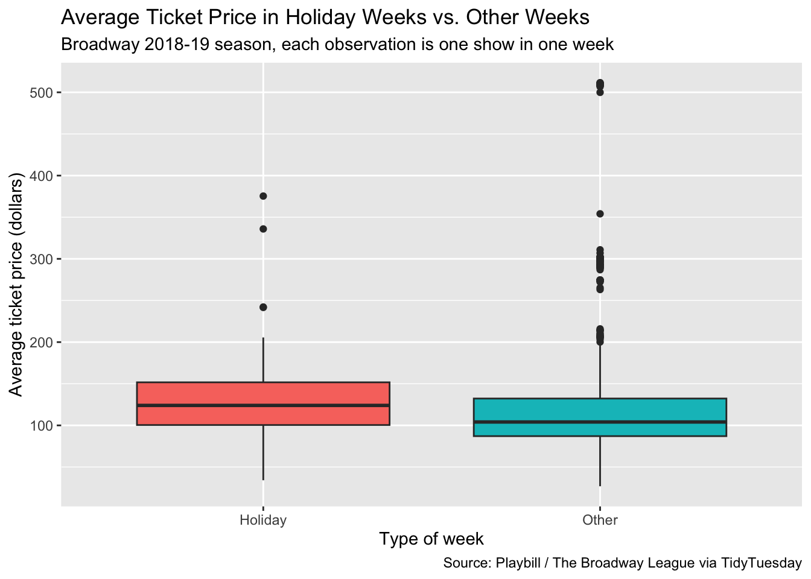
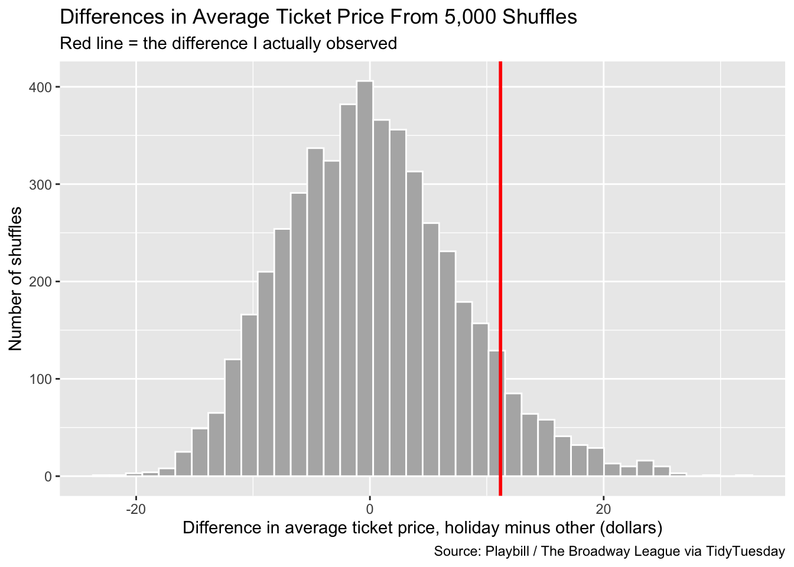

In this project I want to see if Broadway shows charge more for tickets during the holiday weeks. I’m looking at the 2018-19 season, and I’m calling the weeks ending December 23 and December 30 the “holiday weeks.” First I’ll find the difference in average ticket price between holiday weeks and all the other weeks. Then I’ll shuffle the week labels 5,000 times to see what differences look like when nothing is going on, and compare that to what I actually saw.
Each row is one show in one week. These are the variables I use:
week_ending: the Sunday that ends the week
avg_ticket_price: the average price of the tickets sold that week (in dollars)
holiday: a variable I made. It says “Holiday” if the week ended on 2018-12-23 or 2018-12-30, and “Other” for every other week
I think this is interesting because the time between Christmas and New Year’s is really busy in New York, so theatres might raise prices. I only used one season so that inflation doesn’t mess up the comparison.
My hypotheses are:
Null hypothesis: The mean average ticket price is the same in holiday weeks and other weeks.
Alternative hypothesis: The mean average ticket price is higher in holiday weeks.
# A tibble: 2 × 2
holiday n
<chr> <int>
1 Holiday 78
2 Other 1697
This table shows how many show-weeks are in each group. There are way more “Other” show-weeks than “Holiday” ones because only two weeks count as holiday weeks.
Looking at the original data
Code
ggplot(season, aes(x = holiday, y = avg_ticket_price, fill = holiday)) +geom_boxplot(show.legend =FALSE) +labs(title ="Average Ticket Price in Holiday Weeks vs. Other Weeks",subtitle ="Broadway 2018-19 season, each observation is one show in one week",x ="Type of week",y ="Average ticket price (dollars)",caption ="Source: Playbill / The Broadway League via TidyTuesday" )

This boxplot compares ticket prices in the holiday weeks to the other weeks. I can look at the middle line of each box to see if holiday prices are higher. There’s also a lot of spread in both groups, because some shows are much more expensive than others. So I can’t tell from the plot alone if the difference is real, which is why I need the simulation.
Here is the actual difference in the average prices:
Code
group_means <- season |>group_by(holiday) |>summarize(mean_price =mean(avg_ticket_price)) |>pull(mean_price)group_means
R lists the groups alphabetically, so Holiday comes first, which means this is holiday minus other. The average ticket price in holiday weeks was 11.17 dollars different from other weeks.
The simulation
My function shuffle_diff() randomly mixes up the “Holiday” and “Other” labels, then finds the difference in average price between the two new groups. If nothing is going on, the labels don’t matter, so shuffling them shows what differences happen just by chance. One shuffle isn’t enough to tell, so I use map_dbl() to do it 5,000 times and save all the differences.
Code
set.seed(2026)shuffle_diff <-function(data) { means <- data |>mutate(holiday =sample(holiday)) |>group_by(holiday) |>summarize(mean_price =mean(avg_ticket_price)) |>pull(mean_price) means[1] - means[2]}null_diffs <-map_dbl(1:5000, ~shuffle_diff(season))p_value <-mean(null_diffs >= obs_diff)p_value
[1] 0.079
The p-value is the proportion of shuffled differences that were as big as (or bigger than) my real difference. Mine is 0.079.
Code
ggplot(tibble(diff = null_diffs), aes(x = diff)) +geom_histogram(bins =40, fill ="grey70", color ="white") +geom_vline(xintercept = obs_diff, color ="red", linewidth =1) +labs(title ="Differences in Average Ticket Price From 5,000 Shuffles",subtitle ="Red line = the difference I actually observed",x ="Difference in average ticket price, holiday minus other (dollars)",y ="Number of shuffles",caption ="Source: Playbill / The Broadway League via TidyTuesday" )

This histogram shows the differences I got from shuffling the labels. It’s centered around zero, which makes sense since the shuffled labels have nothing to do with price. The red line is my real difference. If the red line is far out in the right tail, it’s unlikely to be just chance.
Conclusion
In the 2018-19 Broadway season, holiday weeks had an average ticket price about 11.17 dollars higher than other weeks (130.65 dollars compared to 119.48 dollars). My p-value was 0.079, which means that if holiday status had nothing to do with price, I’d still get a difference this big or bigger about 7.9 percent of the time just from shuffling the labels. That’s higher than the usual 0.05 cutoff, so I don’t have strong enough evidence to say holiday weeks really have higher ticket prices. The difference might still be real, since the red line is in the right tail of the histogram, but I can’t rule out chance. This only applies to show-weeks in the 2018-19 Broadway season. Also, the same shows show up in lots of weeks, so the data points aren’t totally independent, and there were only two holiday weeks, so a few expensive shows could have a big effect on the holiday average.
What I did
I used the Broadway grosses data to test if ticket prices are higher during the holiday weeks. I wrote a function called shuffle_diff() that shuffles the week labels and finds the difference in average price. I used map_dbl() to run it 5,000 times, then compared my real difference to the shuffled ones using a histogram and a p-value.